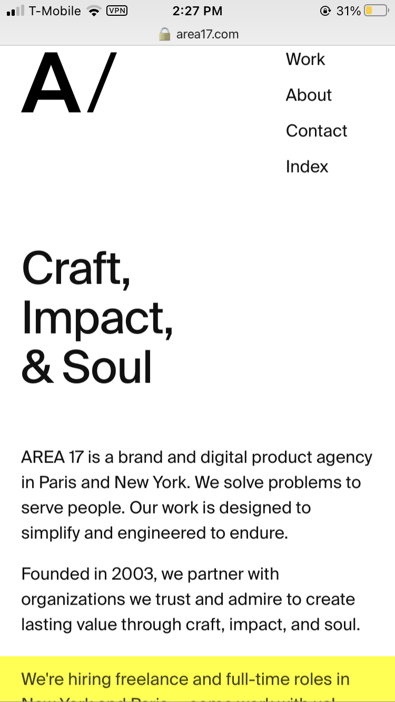
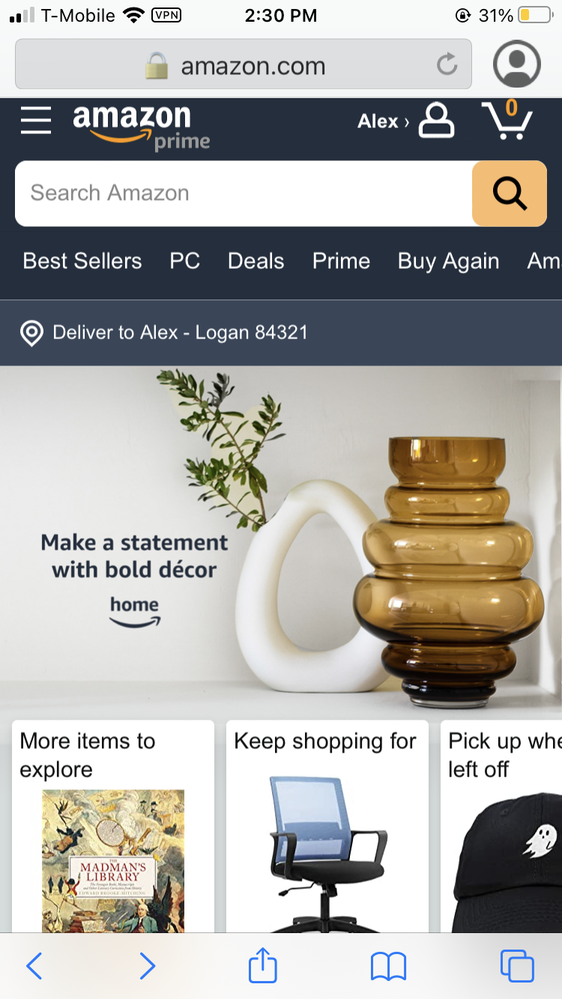

White Space and Clean Design
White space is basically the opposite of clutter. A website with good design will spread content out appropriately and apply the principle of "less is more." Google applies this design by displaying the right amount of information in the right place. The absence of clutter allows users to easily see and use the search bar, which is Google's purpose.
Alignment
Area17
area17.com Choosing how to align content is an important decision, and Area17 does this well by using heavy left-alignment. Even their logo is left-aligned, and the only thing not aligned to the left is the menu. The contrast of left and right draws your eye down the page, yet the page menu is distinct and easy to see.
Fitt's Law
Amazon
amazon.com Fitt's law is all about positioning of elements and how easy they are to reach, or in the case of mobile browsing, the effort needed to tap a